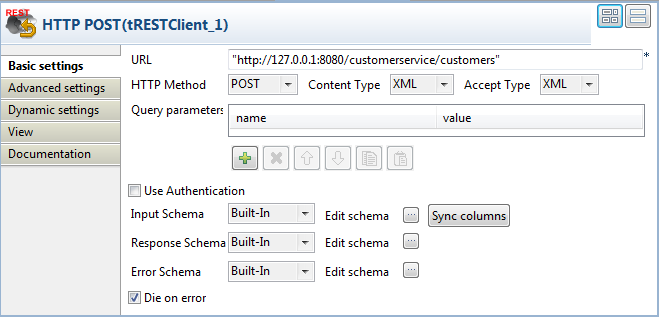

|
Component family |
ESB/REST | |
|
Function |
The tRESTClient component sends HTTP and HTTPS requests to a REpresentational State Transfer (REST) Web service provider and gets the corresponding responses. This component integrates well with Talend Runtime to get HTTPS support, with more QoS features to be supported in time. | |
|
Purpose |
The tRESTClient component is used to interact with RESTful Web service providers by sending HTTP and HTTPS requests using CXF (JAX-RS). | |
|
Basic settings |
URL |
Type in the URL address of the REST server to be invoked. |
|
|
HTTP Method |
From this list, select an HTTP method that describes the desired action. The specific meanings of the HTTP methods are subject to definitions of your Web service provider. Listed below are the generally accepted HTTP method definitions: - GET: retrieves data from the server end based on the given parameters. - POST: uploads data to the server end based on the given parameters. - PUT: updates data based on the given parameters, or if the data does not exist, creates it. - DELETE: removes data based on the given parameters. |
| Content Type | Select XML, JSON, or FORM according to the media type of the content to be uploaded to the server end. This list appears only when you select the POST or PUT HTTP method. | |
| Accept Type | Select the media type the client end is prepared to accept for the response from the server end. Available options are XML, JSON, and ANY. When ANY is selected, the response message can be of any type and will be transformed into a string. | |
| Query parameters | Specify the URI query parameters in the form of name-value pairs. This option is mostly used with the GET method. | |
| Use Authentication | Select this check box if authentication is required on the REST server end. Once selected, you need to provide your username and password. Currently only basic HTTP authentication is supported and more options will be provided. | |
|
|
Schema and Edit Schema |
A schema is a row description, i.e., it defines the number of fields that will be processed and passed on to the next component. This component uses three built-in, read-only schemas.
Click Edit Schema to view the schema structure. WarningChanging the schema type may result in loss of the schema structure and therefore failure of the component. |
| Input Schema |
Schema for the input data. This schema contains two columns: - body: stores the content of structured input data - string: stores the input content when it is, or is handled as, a string. | |
| Response Schema |
Schema for server response. This schema is passed onto the next component via a Row > Response link, and it contains three columns: - statusCode: stores the HTTP status code from the server end. - body: stores the content of a structured response from the server end. - string: stores the response content from the server end when it is, or is handled as, a string. | |
| Error Schema |
Schema for error information. This schema is passed onto the next component via a Row > Error link, and it contains two columns: - errorCode: stores the HTTP status code from the server end when an error occurs during the invocation process. The specific meanings of the errors codes are subject to definitions of your Web service provider. For reference information, visit en.wikipedia.org/wiki/List_of_HTTP_status_codes. - errorMessage: stores the error message corresponding the error code. | |
| Die on error | This check box is selected to kill the Job when an error occurs. Clear the check box to skip the row on error and complete the process for error-free rows. | |
|
Advanced settings |
Connection timeout |
Set the amount of time, in seconds, that the client will attempt to establish a connection before it times out. If set to 0, the client will continue to attempt to open a connection indefinitely. (default: 30) |
| Receive timeout | Set the amount of time, in seconds, that the client will wait for a response before it times out. If set to 0, the client will wait indefinitely. (default: 60) | |
| HTTP Headers |
Type in the name-value pair(s) for HTTP headers to define the parameters of the requested HTTP operation. For the specific definitions of HTTP headers, consult your REST Web service provider. For reference information, visit en.wikipedia.org/wiki/List_of_HTTP_headers. | |
| Use HTTP proxy | Select this check box if you are using a proxy server. Once selected, you need to provide the connection details: host, port, username and password. | |
| tStatCatcher Statistics | Select this check box to gather the Job processing metadata at the Job level as well as at each component level. | |
|
Usage |
This component is used as a RESTful Web service client to communicate with a RESTful service provider, with the ability to input a request to a service into a Job and return the Job result as a service response. Depending on the actions to perform, it usually works as a start or middle component in a Job or subjob. | |
| Connections |
Outgoing links: Row: Response; Error. Trigger: On Subjob Ok; On Subjob Error; Run if; On Component Ok; On Component Error.
Incoming links: Row: Main; Reject. Trigger: Run if; On Subjob Ok; On Subjob Error; On component Ok; On Component Error. For further information regarding connections, see Talend Open Studio User Guide. | |
|
Limitation |
n/a | |
This scenario describes a Job composed of two subjobs: a four-component subjob that adds a customer record to a RESTful Web service, and a two-component subjob that retrieves the customer information from the server end. When executed, the Job displays relevant information on the Run console.
In this scenario, the Web service used as an example has the following XML tree structure, where only the content of name nodes is user updatable:
<Customers>
<Customer>
<id>id1</id>
<name>Name1</name>
</Customer>
<Customer>
<id>id2</id>
<name>Name2</name>
</Customer>
...
</Customers>In the first subjob, a tXMLMap component is used to adapt the input data structure to the tree structure of the RESTful Web service.
Drop the following components from the Palette onto the design workspace: a tFixedFlowInput, a tXMLMap, two tRESTClient components and two tLogRow components.
Connect the tFixedFlowInput to the tXMLMap component using a Row > Main connection.
Connect the tXMLMap component to the first tRESTClient component using a Row > Main connection, and give it a name, out in this example.
Connect the first tRESTClient to first tLogRow using a Row > Response connection to complete the first subjob, which will upload a customer record to the server end and display the response information from the server end.
Connect the second tRESTClient to the second tLogRow using a Row > Response connection to complete the second subjob, which will retrieve and display customer information from the server end.
Connect the two subjobs using a Trigger > OnSubjobOK connection.
Label the components to best describe the actions to perform.

Procedure 12.5. Setting up data input and structure mapping
Double-click the tFixedFlowInput component to open its Basic settings view.

Click the [...] button next to Edit schema and then set up the schema of the input data in the [Schema] dialog box, and click OK to close the [Schema] dialog box.
In this example, the input schema has only one column, name.
In the Values table under the Use Single Table option, fill the Value field with a customer name, Gerald Wilson for example, between double quotation marks.
Fill the Number of rows field with 1.
Double-click the tXMLMap component to open the Map Editor.

In the output table, right-click the default root node of the body column, select Rename from the contextual menu, and rename it to Customer. Make sure Customer is the loop element because the XML structure of the Web service to be invoked is looped on this element.
Right-click the Customer node, select Create Sub-Element from the contextual menu, and create sub-element named name.
Drop the name column in the input table to the name node in the output table, and then click OK to validate the mapping and close the Map Editor.
Procedure 12.6. Setting up REST actions and console display
Double-click the first tRESTClient component to open its Basic settings view.
Fill the URL field with the URL of the Web service you are going to invoke. Note that the URL provided in this use case is for demonstration purpose only and is not a live address.
From the HTTP Method list, select POST to send an HTTP request for creating a new record.
From the Content Type list, select the type of the content to be uploaded to the server end, XML in this example.
From the Accept Type list, select the type the client end is prepared to accept for the response from the server end, XML in this example. Leave the rest of the settings as they are.
Double-click the second tRESTClient component to open its Basic settings view.

Fill the URL field with the same URL as in the first tRESTClient component.
From the HTTP Method list, select GET to send an HTTP request for retrieving the existing records, and select XML from the Accept Type list. Leave the rest of the settings as they are.
In the Basic settings view of each tLogRow, select the Print component unique name in front of each output row and Print schema column name in front of each value check boxes for better identification of the output flows.

Press Ctrl+S to save your Job.
Press F6 or click Run on the Run console to launch the Job.
The console shows that the first tRESTClient component sends an HTTP request to the server end to create a new customer named Gerald Wilson, and the second tRESTClient component successfully reads data from the server end, which includes the information of the new customer you just created.